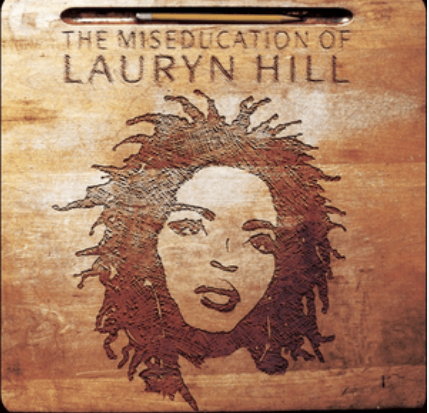
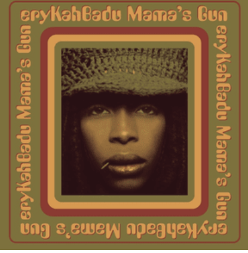

Neo Soul Album Gallery

Lauryn Hill-Spotify-https://open.spotify.com/album/1BZoqf8Zje5nGdwZhOjAtD-Fair-use license
About this Album
- This album made Lauryn Hill the first black woman to win album of the year
- Ex-factor is often cited as one of the best breakup songs

okayplayer-ownwork-https://www.instagram.com/p/DPy8Gd9EXGC/?img_index=4- fair-use
About this Album
- Voodoo Won a Grammy for best rhythm and blues album in 2001
- "Voodoo is listed as the 28th best album of all time by Rolling Stone

Erykah Badu-Spotify-https://en.wikipedia.org/wiki/File:Mama%27s_Gun.png-fair-use license
About this Album
- This album is raw and intesely personal as it was created after Badu's separation from Outkast's Andrè 3000
- Badu encourperates a lot of live musical instuments into this album

JillScott-Amazon.com-https://en.wikipedia.org/wiki/File:Who_Is_Jill_Scott_album_cover.jpg-fair-uselicense
About this Album
- This album was nominated for best rhythm and blues album at the 2001 Grammys
- Jill Scott often recities poetry or spoken word in some of her songs as she does in the "intro song" to this album
My Inspiration
Erykah Badu's live performace of "Green Eyes" at North Sea Jazz (highly recomended)